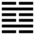

Thuần Khảm (坎 kǎn)
Lẽ trời không thể quá (cực đoan) được mãi, hễ quá thì sẽ phải sụp vào chỗ hiểm. Vậy sau quẻ Đại quá, tới quẻ Thuần khảm. Khảm có nghĩa là sụp, là hiểm.
*
Thoán từ: :
習坎: 有孚, 維心亨, 行有尚．
Tập Khảm: Hữu phu, duy tâm hanh, hành hữu thượng.
Dịch: Hai lớp khảm (hai lớp hiểm), có đức tin, chỉ trong lòng là hanh thông, tiến đi (hành động) thì được trọng mà có công.
Giảng: Tập Khảm có nghĩa là trùng khảm, hai lần Khảm. Nhìn hình quẻ Khảm ta thấy một hào dương bị hãm vào giữa hai hào âm, cho nên Khảm có nghĩa là hãm, là hiểm.
Ta lại thấy ở giữa đặc (nét liền), ngoài rỗng (nét đứt), trái với quẻ Ly ☲ giữa rỗng trên dưới đặc, như cái miệng lò; chỗ rỗng đó là chỗ không khí vô để đốt cháy than, củi, cho nên Ly là lửa. Khảm trái với Ly, chỗ nào trống thì nước chảy vào; Ly là lửa thì Khảm là nước. Nguy hiểm không gì bằng nước sâu, không cẩn thận thì sụp xuống, chết đuối, nên bảo nước là hiểm.
Xét theo ý nghĩa thì hào dương ở giữa, dương là thực, thành tín, vì vậy bảo là Khảm có đức tin, chí thành (hữu phu) ở trong lòng, nhờ vậy mà hanh thông. Gặp thời hiểm, có lòng chí thành thì không bị tai nạn, hành động thì được trọng mà còn có công nữa.
Thoán truyện giảng thêm: Nước chảy hoài mà không bao giờ ứ lại (lưu nhi bất doanh) chỗ hiểm trở nào cũng tới, cho nên bảo là có đức tin.
Lòng được hanh thông vì hai hào giữa (hào 2 và 5), đã cương mà đắc trung.
Trời có tượng hiểm (vì không lên trời được) ; đất có tượng hiểm, tức núi sông. Các bậc vương công theo tượng trời và đất mà đặt ra những cái hiểm (tức đào hào, xây thành, đạt ra hình pháp) để giữ đất đai và sự trật tự trong xã hội. Cái công dụng của hiểm nếu hợp thời thì cực lớn.
Đại tượng truyện khuyên nên theo cái đức chảy hoài không ngừng của nước mà giữ bền đức hạnh mà tu tĩnh không ngày nào quên.
Ý nghĩa các hào:
初六: 習坎, 入于坎窞, 凶．
Sơ lục: Tập khảm, nhập vu khảm năm ( có người đọc là đạm, hạm, lăm), hung.
Dịch: Hào 1, âm: Hai lần hiểm, sụp vào hố sâu, xấu.
Giảng: hào 1 đã âm nhu, lại ở dưới cùng quẻ Thuần Khảm hai lần hiểm, nên rất xấu.
2.
九二: 坎有險, 求小得．
Cửu nhị: khảm hữu hiểm, cầu tiểu đắc.
Dịch: Hào 2, dương : ở chỗ nước (hiểm) lại có hiểm, mong làm được việc nhỏ thôi.
Giảng: Hào này dương cương, đắc trung, có tài trí, nhưng ở giữa thời trùng hiểm, trên dưới bị hai hào âm nhu bao vây, chưa thóat được; cho nên chỉ mong làm đựơc việc nhỏ thôi.
Hào 4 quẻ Dư (số 6) cũng là dương ở vị âm; cũng bị hai hào âm bao vây, còn kém hào 2 quẻ Khảm vì không đắc trung,vậy mà Hào từ cho là “đại hữu đắc” (thành côn lớn); còn hào 2 quẻ Khảm này chỉ cầu được “tiểu đắc” thôi; chỉ vì thời khác; thời quẻ Dự là thời vui vẻ, hanh thông, thời quẻ Khảm là thời gian nan, nguy hiểm.
3.
六三: 來之坎坎, 險且枕, 入于坎窞, 勿用.
Lục tam: Lai chi khảm khảm, hiểm thả chẩm, nhập vu khảm năm, vật dụng.
Dịch: Hào 3, âm : tới lui (chử chi ở đây nghĩa là đi) đều bị hãm, trước mặt là hiểm mà sau lưng lại kê (dựa) vào hiểm, chỉ càng sụp vào chỗ sâu hơn thôi, chớ dùng (người ở hoàn cảnh hào 3 này, không được việc gì đâu).
Giảng: Hào này âm nhu, bất trung, bất chính, ở trên cùng quẻ nội khảm, mà tiến lên thì gặp ngoại khảm, trước mặt là khảm, sau lưng là khảm, toàn là hiểm cả, cho nên chỉ sụp vào chỗ sâu hơn thôi.
4.
六四: 樽酒簋, 貳 用缶, 納約自牖, 終无咎．
Lục tứ: Tôn tửu quĩ, nhị dụng phẫu, nạp ước tự dũ, chung vô cữu.
Dịch: Hào 4, âm: Như thể chỉ dâng một chén rượu, một quĩ thức ăn, thêm một cái vò dựng vài thức khác nữa (không cần nhiều, hễ chí thành là được); (có thể tùy cơ ứng biến) dứt khế ước qua cửa sổ (chứ không đưa qua cửa chính), như vậy không có lỗi.
Giảng: Lời hào này gọn quá, khó hiểu. Phan Bội Châu giảng như sau: tôn là chén rượu, quĩ là đồ đựng thức ăn; nhị là thứ nhì, phó (trái với chánh) là thêm sao, phẫu là cái vò. Tôn tữu quí, nhị dụng phẫu nghĩa là rượu chỉ một chén, thức ăn chỉ một quĩ, các thức khác thêm vào chỉ dùng một cái vò cũng đủ. Ý nói không cần nhiều, miễn lòng chí thành là được. “Nạp ước tự dũ” Nghĩa là khế ước (để làm tin) đáng lẽ phải nộp qua cửa lớn, nhưng lại dứt qua cửa sổ (dũ), như vậy là không chính đại quang minh, nhưng gặp thờ ihiểm, khó khăn, có thể “bất đắc dĩ nhi dụng quyền” (quyền này không phải là quyền hành, mà là quyền biến: tùy cơ ứng biến), miễn là giữ được lòng chí thành.
Hào này như một vị đại thần, nhưng âm nhu, vô tài, không cứu đời ra khỏi cảnh hiểm được; cũng may mà đắc chính, chí thành, cứ giữ đức chí thành đó mà đối với vua, với việc nước, nếu lại có chút cơ trí, biết tòng quyền, thì rốt cuộc không có lỗi.
5.
九五: 坎不盈, 祗既平, 无咎.
Cửu ngũ: Khảm bất doanh, chỉ kì bình, vô cữu.
Dịch: Hào 5, âm: Nước (hiểm) chưa đầy, nhưng đến lúc nước đầy rồi, lặng rồi, thì sẽ khỏi hiểm, không có lỗi.
Giảng: Hào này dương cương, có tài, đắc trung, đắc chính, ở ngôi chí tôn, mới trải qua già nữa thời Khảm, hiểm chưa hết, nước còn dâng lên nữa, đến khi nào nước đầy rồi mới bình lại, mà dắt dân ra khỏi hiểm được. Chữ Kì ở đây nghĩa là bệnh, tức hiểm nạn, trỏ chữ khảm.
6.
上六: 係用黴纆, 寘于叢棘, 三歲不得, 凶．
Thượng lục: Hệ dụng huy mặc, trí vu từng cức, tam tuế bất đắc, hung.
Dịch: Hào trên cùng, âm: đã trói bằng dây thừng to, lại đặt vào bụi gai, ba năm không được ra, xấu.
Giảng: Hào này âm nhu, ở trên cùng quẻ Khảm, chỗ cực kì hiểm, đã không có tài ra khỏi cảnh hiểm, lại không biết hối mà sửa mình, nên bị họa rất nặng.